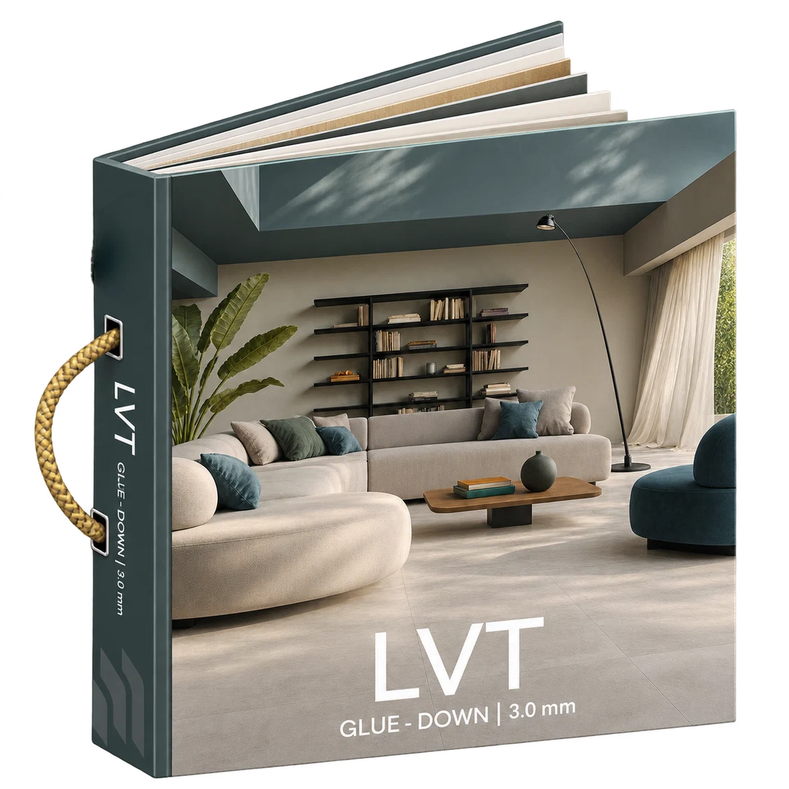

เปรียบเทียบแนวคิดพื้น LVT Glue-Down และ SPC Click-Lock ก่อนวางแผนงานติดตั้ง พร้อมข้อควรระวังเรื่องพื้นเดิม
วิธีติดตั้งคือจุดต่างสำคัญ
LVT Glue-Down เป็นพื้นไวนิลที่ติดด้วยกาวตามระบบของผู้ผลิต ส่วน SPC Click-Lock เป็นระบบล็อกขอบแผ่น ความเหมาะสมขึ้นอยู่กับการใช้งานและสภาพหน้างาน
พื้นเดิมและการเตรียมหน้างาน
พื้นทากาวมักต้องให้ความสำคัญกับความเรียบและคุณภาพผิวรองรับ เพราะรอยที่พื้นเดิมอาจส่งผลต่อผิวงานหลังติดตั้งได้ ส่วนระบบคลิกล็อกก็มีข้อกำหนดความเรียบและการติดตั้งของตนเอง
ดูความหนาอย่างระมัดระวัง
FACEWALL มี eCatalog LVT Glue-Down 2.0 และ 3.0 มม. รวมถึง SPC หลายความหนา ไม่ควรใช้ความหนาเพียงค่าเดียวสรุปความทนทานของสินค้า
ขอคำแนะนำก่อนติดตั้ง
ถ่ายรูปพื้นเดิม ระบุพื้นที่โดยประมาณ และเลือกสีที่ชอบจากแคตตาล็อก ทีมงานจะช่วยประเมินความเหมาะสมและแจ้งสิ่งที่ต้องตรวจหน้างาน
ต้องการข้อมูลประกอบการเลือกวัสดุสำหรับหน้างานของคุณ? ติดต่อ FACEWALL เพื่อขอคำปรึกษาและรายละเอียดแคตตาล็อก
ดูแคตตาล็อกวัสดุปูพื้น ↗